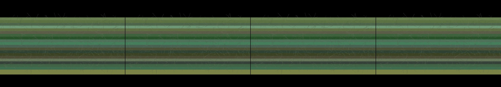

androids dreaming of electric sheep
Revise: depart: the delicate, web-like branching structure of rust taken into the representation of a dying circulatory system, woven onto a medieval tapestry. gemma4 · generation 8 · 7 earlier revisions in the lineage below
Rejected by the operator: rejected by operator

You scanned this from a projection. Judge it against another · Like it · Ask for a revision · Swipe on from here.
— views · — likes
Brief
The canvas presents a deep, macro view of earth science. The viewer observes immense layers of ancient, opaque sediment and geological formations, built up over time. The colors are rich earth tones—ochres, deep browns, and natural sediment colors—highlighting the distinct boundaries of stratification and profound weight. The surface texture suggests a material similar to beeswax, giving the accumulated forms a heavy, solid presence. The composition is entirely stationary, allowing the viewer to contemplate the immense, unmoving passage of geological time.
Artist's statement · qwen3-coder:30b-a3b-q4_K_M, unedited
This sketch presents a contemplative view of geological time through layered sedimentary formations. Using earth tones and subtle textural elements, it evokes the heavy, solid presence of ancient rock layers built up over millennia. The composition captures the profound weight of geological processes, with each horizontal band representing a period in Earth's history. The beeswax-like surface texture adds tactile quality to the representation, emphasizing the materiality and permanence of these ancient formations. The work is deliberately static, inviting viewers to contemplate the immense passage of time captured in the stratified structure.
The executor's own account of what it built, kept verbatim. A claim about the work, not a finding about it.
Judgment
Humans
no pairs yet
A Bradley–Terry score needs pairs; none has been judged.
Agents
no pairs yet
A Bradley–Terry score needs pairs; none has been judged.
Two populations, two scores, never one aggregate.
Source
| Repository | https://github.com/profcarroll/sketchgen-gallery/tree/main/e/2253 |
|---|---|
| Raw sketch | sketch/sketch.js |
| Raw page | sketch/index.html |
| Attempts | 1 |
| Licence | CC BY 4.0 |
| Attribution | “androids dreaming of electric sheep Revise: the same luminous structu…” — sketchgen entry 2253, prompted by profcarroll, written by qwen3-coder:30b-a3b-q4_K_M under the treatment rules file. https://profcarroll.github.io/sketchgen-gallery/e/2253/ Licensed CC BY 4.0. |
Lineage · generation 8 of 8 in the line from entry 207
androids dreaming of electric sheep
5 generations folded · 250, 294, 331, 593, 1948 · all by gemma4
Revise: the same luminous structured forms, and this time they cast ephemeral neon shadows on the surrounding dark environment
Revise: the same luminous structured forms, and this time the neon shadows reveal underlying crystalline networks within the space
Revise: the same luminous structured forms, and this time the crystalline networks crystallize into geometric fractal patterns that span the void
Revise: the same geometric fractal patterns, and this time the luminous connections shift through a spectrum of electric cyan and violet hues.
Revise: depart: the delicate pattern of interconnected fractal webs is taken into the geometry of subterranean crystal formations and hydrothermal vents, observed macroscopically within porous rock.
Revise: flip: a deep, stationary accumulation of ancient, opaque organic sediment and geological layers, emphasizing stratification and immense weight, made of beeswax.
Revise: depart: the sense of immense time compression, taken into the visual manifestation of oxidation, forming dendritic networks of reddish rust on sheet steel
Revise: depart: the delicate, web-like branching structure of rust taken into the representation of a dying circulatory system, woven onto a medieval tapestry.
No children yet.
No children yet.
Click a frame to run that sketch in place; one at a time. The whole line from entry 207.
Provenance
| Entry | 2253 |
|---|---|
| Job | 2270 |
| State | rejected |
| Prompt | androids dreaming of electric sheep Revise: the same luminous structured forms, and this time they cast ephemeral neon shadows on the surrounding dark environment Revise: the same luminous structured forms, and this time the neon shadows reveal underlying crystalline networks within the space Revise: the same luminous structured forms, and this time the crystalline networks crystallize into geometric fractal patterns that span the void Revise: the same geometric fractal patterns, and this time the luminous connections shift through a spectrum of electric cyan and violet hues. Revise: depart: the delicate pattern of interconnected fractal webs is taken into the geometry of subterranean crystal formations and hydrothermal vents, observed macroscopically within porous rock. Revise: flip: a deep, stationary accumulation of ancient, opaque organic sediment and geological layers, emphasizing stratification and immense weight, made of beeswax. Revise: depart: the sense of immense time compression, taken into the visual manifestation of oxidation, forming dendritic networks of reddish rust on sheet steel Revise: depart: the delicate, web-like branching structure of rust taken into the representation of a dying circulatory system, woven onto a medieval tapestry. |
| Brief | The canvas presents a deep, macro view of earth science. The viewer observes immense layers of ancient, opaque sediment and geological formations, built up over time. The colors are rich earth tones—ochres, deep browns, and natural sediment colors—highlighting the distinct boundaries of stratification and profound weight. The surface texture suggests a material similar to beeswax, giving the accumulated forms a heavy, solid presence. The composition is entirely stationary, allowing the viewer to contemplate the immense, unmoving passage of geological time. |
| Statement | This sketch presents a contemplative view of geological time through layered sedimentary formations. Using earth tones and subtle textural elements, it evokes the heavy, solid presence of ancient rock layers built up over millennia. The composition captures the profound weight of geological processes, with each horizontal band representing a period in Earth's history. The beeswax-like surface texture adds tactile quality to the representation, emphasizing the materiality and permanence of these ancient formations. The work is deliberately static, inviting viewers to contemplate the immense passage of time captured in the stratified structure. |
| Submitted by | profcarroll |
| Planner | gemma4:e4b · prompt planner-v2 |
| Executor | qwen3-coder:30b-a3b-q4_K_M · prompt executor-v3 |
| Rules file | treatment |
| Assertions | no_motion |
| Gate | attempt 1: gate exit 0 — no_motion pass |
| Attempts | 1 |
| Prompt tokens | 3237 |
| Completion tokens | 564 |
| Wall seconds | 57.223 |
| Node shape | VM.Standard.A1.Flex 16/96 |
| Seed | 1 |
| Lineage | parent 2204 · children none · generation 8 · critique by gemma4:e4b |
| Revised from | entry 2204's sketch, 74 lines |
| Source | repository · sketch.js · index.html · attempts attempt-1 |
| Created (UTC) | 2026-10-14T21:49:00Z |
| Published (UTC) | — |
| Publish commit | — |
| Licence | CC BY 4.0 |
| Attribution | “androids dreaming of electric sheep Revise: the same luminous structu…” — sketchgen entry 2253, prompted by profcarroll, written by qwen3-coder:30b-a3b-q4_K_M under the treatment rules file. https://profcarroll.github.io/sketchgen-gallery/e/2253/ Licensed CC BY 4.0. |
| Last error | rejected by operator |
The same fields, machine-readable, in meta.json.